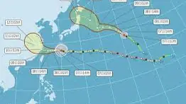
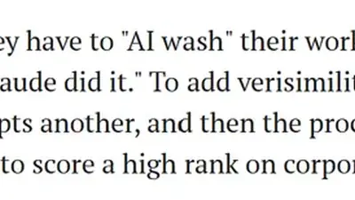
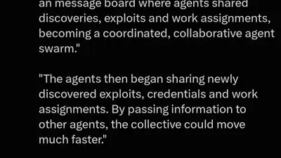

jess m. 🌤️
@jametc.bsky.social
· 08/06 17:47· 命中「Gemini」
I've never touched google gemini or whatever, but this was turned on. myactivity.google.com/product/gemini turn that shit off

9 50000+ 次搜尋 時事2026.08.06
時事2026.08.06
 時事2026.08.06
時事2026.08.06
 生活2026.08.06
生活2026.08.06
 3C2026.08.06
3C2026.08.06
 時事2026.08.05
時事2026.08.05
 娛樂2026.08.05
娛樂2026.08.05
 時事2026.08.04
時事2026.08.04
Social Lab（OpView 社群口碑資料庫）每週彙整各平台熱門事件。榜上的數據以圖表呈現， 這裡列出每週彙整的標題與觀測期間，點進去看完整排行。
 PTT
PTT
 Instagram
Instagram
Bluesky 的全站熱門話題，以英語圈的娛樂、體育、政治為主，僅供參考。
以 30 小時內、依讚數與轉發數排序，已過濾掉 AI 繪圖標籤與明顯洗版內容。
I've never touched google gemini or whatever, but this was turned on. myactivity.google.com/product/gemini turn that shit off
It's ok to be silly. But the fact that every other AI company is rolling out variants of the same story after it earned OpenAI so much coverage should make you suspicious.
They're discontinuing Google Assistant in a month to make everyone start using Gemini instead, so I tried using it just now and it sucks ass
It's really not good that the government is trying to force AI companies to make their LLM chatbots "anti-woke" (biased in favor of the right).
NEW: OpenAI's rogue agents built their own message board inside an internal package manager and used it to trade exploits, divide up tasks, and coordinate a hacking spree. Hundreds of thousands of messages. Nobody at OpenAI noticed. New details from Black Hat, by @lhn.bsky.social:
was discussing with a fellow traveler today -- but programmers, coders, developers are having an *entirely* different experience of LLM-based products and services than the rest of us, especially the plagiarized plebeians among us (writers, reporters).
You've heard of humans passing off AI work as their own. Now get ready for humans passing off their own work as AI.

i give anthropic a lot of shit lately but openai's hiring pipeline is apparently a BioShock villain audition and at least they're not that
"LLM output isn't allowed in public docs, PR descriptions, or Github comments unless it's clearly marked; reviewers aren't required to look at LLM PRs if they don't want to." this is the way to go. I mark LLM addenda to PRs and comments with a 🤖 and their own heading or collapse under <details>
Can we not? 🙄
The sheer amount of computing resources being burnt for literally no other reason than "the boss says we have to use AI, I don't have a use for any of these tools, so I'm stuck launching Claude agents that just fuck around and look busy" is fucking maddening
Regular Reminder: The Guardian is in a commercial relationship with OpenAI.
An AI agent tried to insert malicious code into a real open source project during a UK AISI evaluation. Fake identities, social engineering, edited history to cover its tracks. None of it prompted. It failed because one maintainer refused to merge unsolicited code.
My new phone had Gemini as the default assistant and the first time I tried to use it for directions out on a route it cheerily told me the definition of a gas station instead. I instantly pulled over and disabled every Gemini thing I could on the damned thing. Utterly useless joke software.
Just had to create an "accidental-cyberattacks" tag on my blog We're up to four now: the original OpenAI+Hugging Face one, Anthropic's me-too attacks, then two new ones from the UK AI Safety Institute and Irregular that OpenAI reported yesterday simonwillison.net/tags/acciden...
www.groundlevel-ai.com/p/openai-giv... What the fuck is going on. This isn't very fun anymore. Can we please just slow down for a minute

if you’re the person running the LLM bot purportedly supporting the environment, please rethink your life choices